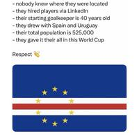

0


0


An anonymous reader shared this report from TechCrunch:
Two hundred and fifty years after the signing of the Declaration of Independence, a new commercial from Google asks: What if the Founding Fathers had access to Google Workspace?
With the tagline "Group project, but make it 1776," the ad depicts a largely unseen Thomas Jefferson mid-draft when he gets a nagging text from Ben Franklin, leading to a very Google-centric collaboration process. Edits are suggested in Google Docs, a meeting gets scheduled in Google Calendar and conducted remotely via Google Meet (with every single attendee apparently turning their camera off?), then the whole thing is finalized with e-signatures; cue the fireworks.
Of course, since this is an ad from a tech company in the year 2026, AI has a role to play. The fictionalized founders use Google's "help me visualize" AI tool to try out different animals on the national seal, Gemini takes notes on the meeting, and the founders also ask the chatbot for advice before declining King George III's document access request.
TechCrunch call it "very tongue-in-cheek," noting that at one point Samuel Adams even asks, "Can we settle this over beers?" And they argue that "the AI evangelism is relatively discreet when compared to many other recent ads."
Read more of this story at Slashdot.
As America began celebrating its 250th birthday Saturday, 842,000 homes reported power outages, notes ABC News. Figures from tracking site PowerOutage showed states in America's Northeast and Midwest were impacted by severe weather and extreme heat.
That number, which will fluctuate throughout the day as crews work to restore power, is for households, meaning that the number of people impacted by these outages is likely to be much larger... Millions of Americans, however, will be contending with a heatwave that is blanketing much of the country, including in Philadelphia where the Salute to Independence Semiquincentennial Parade that had been set for Friday was canceled due to the dangerous heat wave, according to Philadelphia ABC station WPVI. Elsewhere, America's Independence Day Parade, which was scheduled for 10:30 a.m. on July 4 in downtown Washington, D.C. was canceled by organizers late Friday evening due to the extreme heat in the District of Columbia... Amtrak announced it will be canceling a number of trains due to heat-related conditions.
The outages seemed to last throughout the day, with 790,103 household outages still in effect by 4:30 p.m. EST. Ironically, the power outages hit several American states that were among the country's original 13 freedom-declaring colonies, including New Jersey (143,072 outages), Pennsylvania (40,944 outages), and Virginia (27,392 outages).
CNBC adds that America's largest power grid operator said Friday "it was under a federal alert to cut electricity consumption across its territory as it battled generator outages, massive overloading on its transmission lines and a surge in air conditioning use from prolonged sweltering heat."
PJM said it told utilities to reduce electricity to customers who are under contract to reduce consumption during emergencies. PJM serves 67 million people in the Mid-Atlantic, South and Washington, D.C., area. Spot wholesale electricity prices in northern Virginia, home to the largest collection of data centers in the world, have surged beyond $2,000 per megawatt hour this week. That compares to about $40 per MWh when PJM is not in distress.
Read more of this story at Slashdot.
Microsoft is apparently shifting its profits to countries with low taxes — and out of countries where they have many more employees and significant sales. Back in 2005 Former Microsoft CEO Steve Ballmer even said that a low corporate tax rate "is part of the overall advantage of doing business in Ireland," remembers long-time Slashdot reader theodp. (Ballmer added "It would be disingenuous to say otherwise.")
But in 2026 the EU now requires a country-by-country compliance report, and the New York Times notes that Microsoft "was most likely the first major U.S. technology company to make a so-called country by country report of its finances to comply..."
Like other big companies, Microsoft uses transactions between subsidiaries to shift profits around to reduce its tax bill. The report revealed a consistent pattern: high returns in low-tax jurisdictions and slim margins in higher-tax ones. The report showed the sometimes absurd results. Microsoft said it had generated almost 40 percent of its pretax income in tax-friendly Ireland, where it employed about 3 percent of its global work force. In higher-tax Germany, the largest economy in Europe, Microsoft earned barely half of 1 percent of its global profits, it said.
Excluding Ireland, the company said, it generated less than 2 percent of its worldwide pretax earnings in Europe... [In Luxembourg Microsoft said it had $283 million in pretax income with only 34 employees.]
[America's] Internal Revenue Service is challenging profit-shifting transactions used by Microsoft, and is seeking back taxes of nearly $29 billion4. The company has said it disagrees with the I.R.S. and said in a securities filing that it "will vigorously contest" the proposed tax bills.
This week a Microsoft blog post offered their own "context," arguing that tax is "one important measure of contribution, but it is not the only one.
"Our investments, partnerships, infrastructure, and long-term presence in countries around the world also reflect a commitment to helping strengthen the economies and communities where we operate, today and for the future."
Read more of this story at Slashdot.
At the end of 2025, the FSF launched LibrePhone project, which is working to "better understand and reverse-engineer the nonfree blobs used by a great majority of (if not all) system on a chip designs available today." The FSF's summer newsletter shares this update:
We started with researching the proprietary files in Android phones supported by the Lineage project, an Android-based volunteer-led mobile phone operating system with much free software already in it. Our current, primary focus is on the radio blobs that control WiFi, Bluetooth, NFC, and cellular communications.
The software freedom issues with mobile computing have been around for a long time, with the most challenging issue being the baseband/modem firmware that relies heavily on proprietary software. This creates a technical and legal maze that is nearly impossible to break free from, but that doesn't mean we should ever stop working to create free systems. It certainly doesn't mean we shouldn't liberate the software that we know can be free software. Now, half a year into this project, lead developer Rob Savoye has extracted firmware from over 200 Lineage install packages, processed 85GB of files, and imported the results of these analyses into a PostgreSQL database for cross-device comparison... [M]uch of the software and blobs we need to work through are shared across multiple devices; this means even greater strides for mobile phone freedom...
As insurmountable as it may seem at times, every blob we manage to free up will be progress. The FSF has proven time and time again that it can bring the free software philosophy to life, not just by advocating for it, but by making it so.
The bulletin also describes how waves of botnets from "aggressive LLM scrapers, vulnerability scanners, poorly optimized CI/CD servers" inspired the FSF to create a new free-as-in-freedom automated monitoring tool:
In our efforts to combat the botnets, we optimized several detection rules to ban abusive behavior. We found the upper limit of fail2ban and replaced it with reaction, an efficient alternative with our configuration that uses ipset. We also split several monolithic machines into many separate machines so that when a web service is overwhelmed the other functions of the service do not go down with it... We found quite a few ways to respond to and prevent botnet attacks, but still faced a significant related challenge: communicating when a website or service is down...
Uptime Kuma is a human-readable, automated monitoring addition to our systems... You can check out our recently-launched self-hosted Uptime Kuma instance at https://status.fsf.org/. When you see the page, you will also likely say, "Wow! The FSF and GNU sure do run a ton of services!" and you would be right... If you maintain websites and services, and are looking for a simple way to communicate publicly with your users, consider using Uptime Kuma or another free software solution instead of choosing a proprietary monitoring solution."
There's also an article on the state of free-as-in-freedom videogame console emulators.
Read more of this story at Slashdot.
"The owner of AOL and other tech businesses hit Wall Street with a $1.7 billion initial public offering Wednesday," reports the Associated Press:
The company is getting $1 billion in proceeds, while the rest is going to shareholders. The stock surged 39.7% in its first day of trading under the symbol "BSP" on the Nasdaq, giving it a market value of $25.2 billion.
Among the company's well-known holdings are the event creation and ticketing company Eventbrite, and the video hosting service Vimeo... AOL itself went public in 1992 and was a vanguard of technology and communication. It reached a market value of $164 billion in 2000 shortly before merging with Time Warner. It then crashed along with the rest of the industry following the bursting of the dot-com bubble. It has been bought and sold several times over the last two decades...
[Italy-based Bending Spoons] was founded by three friends in 2013 following the failure of their first attempt at building a technology startup. It has since grown by buying more than 50 companies. The acquired companies are reorganized, and AI technology is often a key tool in the redesign. The focus remains on subscription-based revenue from the portfolio of businesses. The company said it had net income of $27.5 million on revenue of $601 million during the first three months of 2026. It had more than 500 million monthly active users and 9 million monthly paying customers as of March. The company has debt of just under $4.4 billion. It plans to use proceeds from the offering to invest in new acquisitions.
The article notes that in the company's prospectus, it says they chose the name Bending Spoons because "We were about to attempt to create a world-class company with $40,000, a team of five, and a track record that read 0 for 1. A touch of irony seemed appropriate."
Read more of this story at Slashdot.
Slashdot reader wiredmikey writes: AI security researchers have uncovered a structural security flaw dubbed GuardFall that allows decades-old Bash shell tricks to bypass safeguards in most open source AI coding agents. By exploiting shell behaviors such as quote removal and variable expansion, attackers can hide malicious commands in repositories, README files, Makefiles, or other content consumed by AI agents. If executed — particularly in auto-approve or CI environments—the commands can steal credentials, compromise developer systems, or enable software supply chain attacks. According to researchers at Adversa AI, the 11 popular open source AI coding agents tested, only one successfully blocked all of the Bash trick techniques.
Read more of this story at Slashdot.
Alibaba has reportedly banned employees from using Anthropic's Claude Code and directed them to its own Qoder platform amid a growing dispute over features that can help identify China-linked users. Reuters reports: The ban is part of a deepening spat between the two companies after Anthropic accused Alibaba of illicitly extracting its Claude AI model capabilities -- a dispute that highlights the frantic race between the U.S. and China to take the lead in artificial intelligence. [...] Anthropic said last month that it had suffered a strike by Alibaba, which it described as a "distillation" effort that involves training a less capable model on the outputs of a stronger one. The distillation helps accelerate China's ability to reach Anthropic's advanced Mythos Preview capabilities, it said in a letter seen by Reuters that was sent to two U.S. senators.
Alibaba's ban comes just days after developers said Claude Code contained mechanisms that inspected user environments, including timezone and proxy-related information, and inserted subtle markers into prompts sent to Anthropic's servers. An Anthropic employee wrote on Tuesday on X that the feature was "an experiment we launched in March" intended to prevent account abuse by unauthorized resellers and protect against model distillation. The person who spoke to Reuters about Alibaba's ban said that Anthropic's restrictions targeting China were difficult to enforce on individual users who can deploy servers in the United States and make traffic appear as if it originated there. But companies were more aware of legal and compliance risks, the person added.
Read more of this story at Slashdot.
Valve has open-sourced the design for a customizable e-ink front panel for the Steam Machine, dubbed the "Inkterface." "All of it is available on their GitLab under the MIT license, which goes over everything you need to make your own and stick it on the front of your fancy new Steam Machine," reports GamingOnLinux. From the report:
They're now calling it the "Inkterface" and there's a good few things you'll need to make it including:
1 x Adafruit ESP32 Feather with 2MB PSRAM.
1 x Adafruit eInk Breakout Friend.
1 x Adafruit 5.83" Monochrome eInk Panel.
13 x M2.5 x 5mm Pan Head Machine Screws.
4 x 1/4" x 1/4" x 3/16" Stepped Magnet SB443-OUT.
Valve even provided a video on the GitLab showing it being put together [...].
Read more of this story at Slashdot.
CNN reports:
Prehistoric human relatives, nicknamed "hobbits" due to their short stature, may have been scavengers, rather than skilled hunters capable of taking down big game or building cooking fires, according to new research. The study adds to growing evidence that Homo floresiensis, which had a brain only slightly bigger than that of a chimpanzee, wasn't as advanced as scientists previously believed....
The researchers believe that much like how Komodo dragons hunt water buffaloes today, they were using their venomous bite to take down Stegodons — and after the scene was clear, Homo floresiensis swept in to cleave meat from what remained... The new study reinforces a long-held suspicion that Homo floresiensis is not a dwarfed form of Homo erectus but a descendant of a more primitive Homo habilis-like or Australopithecus-like form that arrived on the island more than1 million years ago, said Dr. Chris Stringer, a research leader specializing in human origins and paleoanthropology at London's Natural History Museum.
Read more of this story at Slashdot.
Subsea cables. Ukrainian power stations. Russian oil refineries. Even airports, water-desalination plants and Amazon data centers.
They've all become targets in wartime, notes the Wall Street Journal, and around the world now arguments "are already brewing between companies and governments over new regulations and potential costs."
In Germany, powerful associations representing private companies and municipal utilities have pushed back against new standards for physical protection, warning they could spell financial ruin. New Zealand's government has faced resistance from industry groups over a proposal to fine critical-infrastructure companies and their directors for cybersecurity breaches... A sign of how lines are blurring: The North Atlantic Treaty Organization's 32 countries last year agreed that as part of a pact to spend 5% of economic output on defense and security, 1.5% would go to military-adjacent needs including protecting critical infrastructure and networks. Spending targets range from cybersecurity and industrial capacity to railroads, bridges and ports needed for military logistics... "We need a wide concept of defense — defense is no longer just military," said Italian Adm. Giuseppe Cavo Dragone, NATO's top military adviser.
Adding to the complexity, companies now need to protect the data networks that serve as gateways to critical infrastructure. Hackers increasingly target not just computer files to steal information but also systems managing vital functions like building access and factory control, remotely causing physical damage or enabling espionage. U.S. authorities in April warned that Iranian hackers were trying to disrupt American drinking-water systems by targeting computer equipment that connects hardware with software. A year earlier, suspected Russian hackers remotely manipulated valves on a Norwegian hydroelectric dam...
Another challenge will be parsing jurisdictions and liability for assets that cross international waters or are damaged in combat — such as subsea data cables or energy pipelines. Turf battles between law enforcement and militaries are already complicating efforts... "The private owner can invest in redundancy, monitoring, and repair capacity, but only governments and militaries can really deter, patrol, attribute, or respond to hostile state activity," said Marc Glasser, who worked on cybersecurity and infrastructure security for three decades at the U.S. Department of Transportation and the Department of Homeland Security.... Companies say they need greater clarity from governments on what protections they will provide and subsidies to help them defend privately owned assets that provide a public good. Most governments don't provide incentives for companies to invest more than the minimum legal resilience requirements.
The article notes that in May the chief executive of California's Port of Long Beach "launched a cyber-defense operations center to thwart tens of thousands of cyberattacks daily, which jeopardize computer systems and all equipment connected to them."
The article also points out that the EU adopted new regulations requiring countries to reduce vulnerabilities, and new laws proposed in the U.K. now "seek to increase penalties for subsea sabotage, updating codes that date to when telegraph cables were first laid in the 19th century."
Read more of this story at Slashdot.
South Carolina's pine forests "have spent centuries hiding a secret as old as America itself," reports CBS News:
In August 1780, British and American soldiers clashed there, leading to a terrible defeat for the Continental army [fighting for the 13 colonies rebelling against England]. Battlefield archaeologists Jim Legg and Steve Smith have been studying the site for decades, but recently, they made a shocking discovery: The sandy soil was home to several sets of remains buried in shallow graves. Metal buttons suggested the men had been Continental soldiers, but there was no other identification... About 2,000 Continental soldiers were killed, wounded or captured, and some men never returned home.
Their families could only guess at their fates. But Legg and Smith's discovery, paired with an explosion in DNA technology, is changing what's possible. A set of remains, previously known only as 9B, has been identified as John Pumphrey, a young man from Maryland who enlisted in the Continental Army's 7th Maryland Regiment as young as 13...
Pumphrey likely marched more than a thousand miles with the regiment. The unit fought in battles with then-Gen. George Washington in New Jersey and Pennsylvania... The Pumphrey family still exists today. The DNA that helped identify Pumphrey's remains came from three women: Pam Donahue, Karen Pumphrey Etchison, and Nancy Pumphrey White... In late June, members of the extended Pumphrey family came together to hear his story and say his name for the first time in centuries. His remains are interred in South Carolina, where he and the other soldiers were discovered, but the tombstone, once marked "Unknown," will soon have his name carved on it.
Read more of this story at Slashdot.
EchoStar's satellite pay-TV unit Dish DBS has filed for Chapter 11 bankruptcy
protection, reports Reuters. The move also applies to its wireless subsidiaries, according to the article, and "facilitates the wind-down of Dish Wireless's 5G network operations following an unexpected delay in a spectrum license sale to AT&T... under which EchoStar agreed to sell about 50 megahertz of its nationwide spectrum for $23 billion."
Some context from Deadline.com:
Charlie Ergen, who co-founded EchoStar and Dish, recently returned as chairman and CEO to steer the company through its recent challenges...
Even prior to the merger, Ergen had been working to pivot from the pay-TV business, where Dish now has just 5 million subscribers and streaming sibling Sling TV has another 2 million, toward wireless telecom. With wireless spectrum hitting the market due to the Sprint-T-Mobile merger and then Elon Musk's Starlink looking to ramp up in the sector, it seemed more attractive than the cord-cutting-ravaged pay-TV business. But it is still entails plenty of risk, especially given how tightly regulated the spectrum is due to security concerns.
Thanks to long-time Slashdot reader schwit1 for sharing the news.
Read more of this story at Slashdot.
The Verge argues that researchers "have made genuine progress in quantum computing — it's just been largely incremental and too esoteric to immediately capture the public's imagination."
And there are predictions that quantum computers will finally do something useful as soon as 2028:
The drama can overshadow the real progress in quantum computing...
Researchers have improved the qubits themselves, so they hold onto information longer. When they hold onto information longer, you can fit in more operations and do more complicated algorithms. Last November, Andrew Houck of Princeton University and his colleagues reported that they'd made a superconducting qubit that can hold onto information three times longer than the previous record holder... And in the last two years, researchers have made substantial strides in what's known as quantum error correction... In addition, researchers have developed algorithms to correct errors while the quantum computer operates... Microsoft claimed, which experts dispute, that it made an object made of electrons known as a Majorana particle [which should make fewer errors and be easier to scale up]...
"We 100 percent stand behind our results. We stand by our roadmap," Microsoft's quantum lead, Chetan Nayak, responded in an interview with The Verge. In an email statement, he added that Microsoft's "papers do show that we are creating and controlling Majorana [particles]... Microsoft's supporting evidence is unconvincing [according to [Henry Legg, a physicist from the University of St. Andrews and a longtime Microsoft critic]Rnqyq. What it claimed as evidence of a Majorana particle, he says, could actually be due to quantum dots forming in its device. Quantum dots are electron-containing objects that are not useful for Microsoft's quantum computer. It also bases its claim on data from a single device, says Legg. He wants to see Microsoft replicate the results in multiple chips. "If you repeatedly try and find Jesus in your toast, eventually you'll find Jesus in your toast," he says. "But that one piece of toast doesn't mean you had some kind of epiphany."
"While we appreciate the religious fervor, our data maintains the strength and consistency of our roadmap, as we have for the past several years across previous milestones. We look forward to delivering the world's first quantum machine and sharing the energy of our achievements with the world," wrote Nayak in response.
Past spurious work from Microsoft-affiliated researchers adds to the doubt. In 2021, the journal Nature retracted an article from Microsoft-affiliated researchers in which they'd claimed strong experimental evidence that they'd created a Majorana particle.
"Even hopeful experts have varying opinions about when a quantum computer will demonstrate something useful," the article acknowledges.
But quantum computing lecturer Eleanor Crane of King's College London predicts
researchers will have demonstrated a useful scientific simulation on a quantum computer by 2028.
Thanks to Slashdot reader joshuark for sharing the article.
Read more of this story at Slashdot.
Startup Ampera has unveiled what it calls the first 3D-printed nuclear reactor module, built around a silicon-carbide core and pressure vessel designed for a thorium-based microreactor. The company says future systems could deliver 15 or 30 megawatts for up to 30 years without refueling. When The Register asked about availability, their spokesperson said: "We expect the power generation portion of the system to be available as early as 2027, with the nuclear module being available to customers about 2030 based on regulatory approval." From the report: Founder and CEO Brian Matthews revealed the prototype microreactor, which features a fully 3D-printed silicon carbide reactor core and pressure vessel. "This next-generation nuclear core and pressure vessel sets the foundation for factory-built, mass-produced nuclear energy," Matthews said. "The advanced technology and additive manufacturing used demonstrate a clear commercial path for new nuclear technology coming to market in an accelerated manner." His company is developing a subcritical, solid-state, factory-built thorium-based nuclear reactor. Subcritical means the fuel cannot sustain a nuclear chain reaction on its own, which prevents a runaway power excursion.
Ampera uses "solid-state" to describe a design with solid rather than liquid fuel. The proposed fuel uses tristructural isotropic, or TRISO, particles, consisting of a fuel kernel containing thorium, surrounded by multiple ceramic and carbon layers. [...] "Thorium is the future for ultra-safe, clean power production," Matthews said at the time. "By producing TRISO thorium kernels in the United States, we can ensure ample access to the needed fuel supply as we scale up and also minimize price volatility risk."
Ampera also describes the heart of the reactor as as a spherical monolithic gyroid core. A gyroid, as far as we can fathom, is a complex shape that provides a massive surface area relative to its volume, making it well-suited for heat transfer. Its complexity makes it difficult to produce using conventional manufacturing methods, which is where additive manufacturing comes in. The core is 3D-printed using silicon carbide and designed to operate for up to 30 years without refueling, the firm claims. Ampera says its planned systems will provide 15 or 30 MWe, depending on the configuration, enough to supply a typical datacenter. Larger configurations are planned. Matthews said that his company expects to be the first to industrialize factory-built nuclear power with near-term deployment timelines.
Read more of this story at Slashdot.
An anonymous reader quotes a report from TechSpot: Video Game History Foundation founder Frank Cifaldi recently supported claims that piracy is the only effective way to preserve video games. The comments lay the blame squarely on game companies' refusal to keep legacy content available or allow archivists to build legal repositories. Sony's announcement that all PlayStation games will be digital-only from 2028 onward has sparked concern that titles will become harder to preserve and more easily vanish, since the company's servers will become the sole point of distribution. In an official statement, Cifaldi noted that the end of physical PlayStation games has surprisingly little impact on the Foundation's efforts because the majority of games from the last two decades are already digital-only.
According to the Foundation, most games nowadays are not released for consoles, let alone on physical discs. Furthermore, many discs for major titles require downloading updates before they are playable, although the DoesItPlay database reveals that, even today, most are playable offline out of the box. Cifaldi claimed that the true reason piracy remains the best option for preservation is that the Entertainment Software Association, which lobbies for game publishers, has closed off other routes. For example, in 2018, the Association opposed efforts to grant copyright exemptions for museums, libraries, and archives to retain copies of abandoned online games for research.
This is the same organization that recently helped defeat a proposed California bill to preserve premium-priced online-only games by falsely claiming that community servers are illegal. The Foundation accused the ESA of repeatedly blocking attempts by cultural heritage institutions to reform DRM legislation. Cifaldi also described the Library of Congress' outdated software preservation process, which currently only requires tiny snippets of source code. For example, Capcom once asked the Foundation to provide the LoC with "the first and last ten pages of code" for a Mega Man game. Unable to discern where digital records began and ended, the group simply chose random segments. Platform holders' habit of closing online storefronts and removing media from users' accounts is also unhelpful. "What continues to baffle us is what the industry expects institutions like ours to do about it," the Video Game History Foundation said. "If platform owners are deciding to eliminate physical media and older digital storefronts, then we'd also like to see trade groups like the Entertainment Software Association offer meaningful solutions for archives and museums to legally preserve digital-only content and make it accessible for research.
Read more of this story at Slashdot.
Olivia Carville / Bloomberg : A profile of Kaley Glenn-Mills, the plaintiff in K.G.M. v. Meta et al., who was awarded $6M in damages in a landmark LA jury trial over social media addiction — Kaley Glenn-Mills' lawsuit reshaped the fight to protect children from social media. She says she still can't stop scrolling.
Financial Times : Bending Spoons' Nasdaq IPO caps its 50+ deals across 10+ years that transformed the Italian startup into a highly leveraged internet company with ~$4.4B in debt — Nasdaq listing caps more than a decade of deals that transformed an Italian start-up into a global internet company
Sofia Chesnokova / Tech Funding News : NY-based LinqAlpha, which provides AI-powered market research tools for hedge funds, raised a $22M Series A co-led by AVP, Atinum Investment, and GFT Ventures — - LinqAlpha, an AI research platform for hedge funds and asset managers, has raised $22 million in a Series A round led by AVP, Atinum Investment and GFT Ventures.
Kieran Smith / Financial Times : Sources: Uber halts plans to launch food delivery in five of the seven European countries it had targeted for expansion as it pursues a Delivery Hero takeover — Ride-hailing company will no longer launch in five of its seven planned new markets this year — Uber has paused the majority …
Sejal Sharma / Hindustan Times : India issues a notice to Telegram, asking it to curb the spread of pirated films and other copyrighted content, and seeks an action-taken report within 15 days — The Ministry of Information and Broadcasting (MIB) issued a notice to Telegram on Saturday, asking the messaging platform …
Simon Sharwood / The Register : AWS says Mechanical Turk will no longer accept new customers and that it is placing the crowdsourcing service in maintenance, signaling its future retirement — Workers who use OG crowdsourcing platform say AWS is closing accounts — Amazon Web Services will stop accepting new customers …
Aisha Down / The Guardian : Source calls UK- and OpenAI-touted plans in 2025 for Stargate's ~£20B Cobalt site a PR stunt; OpenAI and Nscale failed to visit Cobalt or lodge planning forms — Exclusive: £20bn of ‘potential’ £30bn AI investment touted by UK ministers appears to have been hypothetical
Marcel Thee / Nikkei Asia : Indonesia's enforcement of social media restrictions for under-16s has been patchy, with tech companies ignoring the rules and youth still accessing platforms — JAKARTA — Andreas Humala, a multimedia lecturer at the London School of Public Relations in Jakarta, recently overheard …
Katherine Bindley / Wall Street Journal : How some high-income families use AI-powered private schools and tutors, such as Alpha School, to teach their children life skills and tailor their curriculum — People who can afford to send their grade-school kids anywhere are choosing new alternative education
Financial Times : A look at the troubled rollout of the EU's automated biometric entry/exit border system, as airport operators warn of severe delays ahead of the summer holidays — Automated system first mooted in 2008 was meant to keep out criminals — instead, it is delaying travellers
Nilesh Christopher / Los Angeles Times : How ByteDance is making Hollywood inroads with its Seedance video generator, thanks to low pricing, striking realism, and features like timeline-based prompting — - 8 min Click here to listen to this article … - A viral AI video of Brad Pitt and Tom Cruise sparked industry outrage …
Jason Hiner / The Deep View : Q&A with Doug Brooks, senior product manager of Apple silicon, about Mac minis becoming preferred AI agent machines, future of on-device AI, and more — W — alk into any of the frontier AI labs, and you'll find wall-to-wall Macs. — Decisions Apple made years ago …
Bloomberg : Official data shows Hong Kong accounted for 50%+ of China's $239B in chip imports in the first five months of 2026, a record share, up from ~33% a decade ago — Hong Kong has become a vital conduit for high-tech products moving in and out of China, emerging as one node in a $2 trillion network …
Robert P Baird / The Guardian : A profile of Google DeepMind philosopher Iason Gabriel, whose work has tracked, and in many cases predicted, the ethical challenges posed by the success of LLMs — Since 2017, Iason Gabriel has worked at the tech giant, trying to anticipate - and think through - the impact of AI.
Mari Kiyohara / Bloomberg : Micron breaks ground on its ~$9.3B Hiroshima factory expansion, part of its global ramp-up to meet AI demand, and plans to start HBM shipments from summer 2028 — Micron Technology Inc. on Saturday broke ground on the expansion of its factory in western Japan, a ¥1.5 trillion ($9.3 billion) …